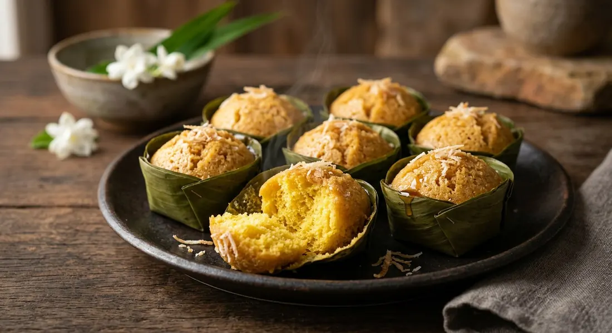

Ripe toddy palm fruit mashed and sieved into rice-flour batter with coconut milk, left to rise — by baking powder, dry yeast, or the fruit's own fermenting yeasts — then steamed in little cups under a crown of grated coconut.

ขนมตาล splits into its parts: ขนม (a sweet) and ตาล — the toddy palm, a word Thai borrowed from Pali and Sanskrit tāla, the tree Thais once called โตนด. Ripe fruit from the female palm, mashed and sieved, goes into rice-flour batter with coconut milk; the batter is steamed in little cups and finished with grated coconut. No eggs, no wheat — Thai Wikipedia counts it among the few genuinely native Thai sweets, untouched by the western influence that reshaped most of the dessert table.
It is a Sukhothai-era sweet, and its home is Phetchaburi — the dessert town, ขนมเมืองเพชร — where the traditional version (ขนมตาลโบราณ, locally ปุ or ตะโหนดเต้า) is still wrapped in palm leaf. Its signature is the smell: faintly boozy, like fermenting wine. The original recipe used no raising agent at all. The fruit's own yeasts did the work, fermenting while the mashed flesh dripped in a cloth bag hung from the rafters — the step Phetchaburi cooks call เกรอะตาล.
Modern recipes shortcut that step. Wongnai and Kapook reach for baking powder and a ten-minute rest. Aroifin kneads in dry yeast and waits four hours. A Cookpad grandmother forbids the powder outright — mix and wait, she says, it rises by itself. Wikipedia notes why the original matters: market versions that skimp on the fruit and fake the yellow with dye come out hard and scentless — the exact failure the old way was built to avoid.
| Thai | English | Amount |
|---|---|---|
| เนื้อลูกตาลสุก | Ripe palm fruit flesh, mashed | 400 g |
| แป้งข้าวเจ้า | Rice flour | 500 g |
| กะทิ | Coconut milk | 3 cups |
| น้ำตาลทราย | White sugar | 400 g |
| ผงฟู | Baking powder | 1 tbsp |
| มะพร้าวขูดเส้นเล็ก | Finely grated coconut | 2 cups |
| เกลือ | Salt (to toss with the coconut) | a little |
The yeast route (Aroifin): same fruit, but 250 g rice flour plus 200 g tapioca starch, 1 kg coconut cream and thin coconut milk, 2 tsp dry yeast, baking powder dissolved in the thin milk only at the end, and a 4–5 hour rest. The traditional route (Krua): no raising agent — the mashed fruit is sieved, hung to drip about 8 hours (เกรอะตาล) while its natural yeast ferments it, and the flour is kneaded with coconut cream for a full 30–60 minutes. Wongnai's half batch: 200 g fruit, 250 g rice flour, 320 ml coconut milk, 200 g sugar — 5 servings, 300 kcal each.
The rise. Baking powder only, ten minutes' rest (Kapook, Wongnai). Dry yeast plus baking powder, four hours' rest (Aroifin). Nothing at all but time — the fruit's own yeast (Cookpad's grandmother; Krua's traditional เกรอะตาล). The original, per Wikipedia, is the last one: the traditional Phetchaburi cake carries the fermented-wine aroma, and no powder can fake it.
When the coconut goes on. Before steaming, salted and sprinkled on the raw batter (Kapook, Cookpad) — or after steaming, on the cooled cakes (Aroifin, Wongnai). Steamed-in coconut melds into the top; added-after coconut stays snow-white and separate.
The flour. Rice flour alone (Kapook, Wongnai, Cookpad) or rice flour cut with tapioca starch (Aroifin, 250 g to 200 g). Krua settles it from the other direction: the tenderness comes from kneading the flour with coconut cream for 30–60 minutes, not from the flour itself.
Knead or whisk. Aroifin and Krua knead — Aroifin in a mixer for half an hour, Krua by hand for up to an hour, and both warn that under-kneaded batter bakes up hard and crumbly. The quick versions whisk, sieve, and go.
The wrapper. Banana-leaf cups (Aroifin, Wongnai), the ceramic ถ้วยตะไล (Kapook, Cookpad), palm leaf for the traditional Phetchaburi version (Wikipedia), and Krua's historical list — ใบขี้เหม็น, ใบตาล, ใบตอง, ใบเขียง, ใบกร่าง — leaves that supposedly stink raw but smell sweet once steamed.
The salt. In the batter (Aroifin, Cookpad — 1 tsp / 6 g), in the coconut topping (Kapook), or in the fruit itself while mashing, to tame its bitterness (Krua). All three agree the dish needs a trace of salt somewhere.
This recipe is translated from the following Thai-language sources. Where they disagree, we've said so.
1. Kapook Cooking — "ขนมตาล สูตรขนมไทยสีเหลืองนวลเนื้อเหนียวนุ่ม หอมอร่อย" (the recipe used here) — cooking.kapook.com
2. Wongnai — "วิธีทำ 'ขนมตาล' เมนูขนมไทย หอมนุ่มถูกปาก สีสันถูกใจ" (the half batch, 300 kcal per serving) — wongnai.com
3. Aroifin — "วิธีทำ ขนมตาล ขนมไทย รสชาติอร่อย สีสวยน่าทาน ทำขายกำไรดี" (the yeast-plus-powder route, kneading and 4–5 hour rest) — aroifin.com
4. Krua.co — "ขนมตาลที่แท้ต้องนุ่มหยุ่นจากยีสต์ธรรมชาติ" by ณัฐณิชา ทวีมาก (the Phetchaburi tradition: เกรอะตาล, the leaf wrappers, the kneading) — krua.co
5. Cookpad (piya peipei) — "ขนมตาล 👵🏻 สูตรยายห้ามใช้ผงฟู" (grandmother's no-baking-powder method; fruit squeezed and hung, batter rested 4 hours) — cookpad.com
6. วิกิพีเดีย — "ขนมตาล" (history from Sukhothai, etymology, the traditional ปุ / ตะโหนดเต้า of Phetchaburi, nutrition) — th.wikipedia.org